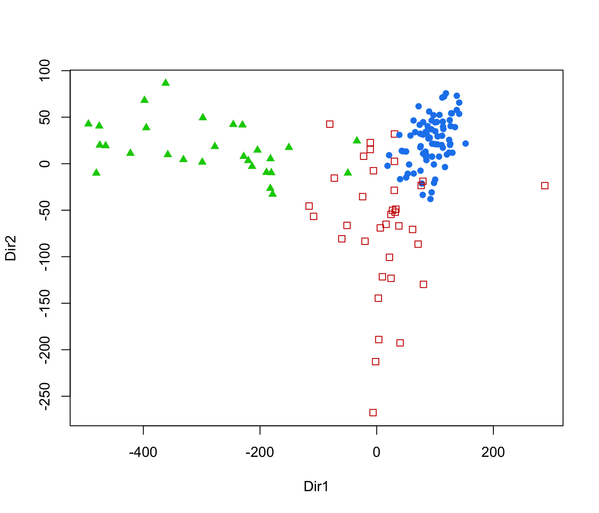

Dimension reduction for model-based clustering and classification
MclustDR.RdA dimension reduction method for visualizing the clustering or classification structure obtained from a finite mixture of Gaussian densities.
MclustDR(object, lambda = 0.5, normalized = TRUE, Sigma, tol = sqrt(.Machine$double.eps))
Arguments
| object | An object of class |
|---|---|
| lambda | A tuning parameter in the range [0,1] described in Scrucca (2014). The default 0.5 gives equal importance to differences in means and covariances among clusters/classes. To recover the directions that mostly separate the estimated clusters or classes set this parameter to 1. |
| normalized | Logical. If |
| Sigma | Marginal covariance matrix of data. If not provided is estimated by the MLE of observed data. |
| tol | A tolerance value. |
Details
The method aims at reducing the dimensionality by identifying a set of linear combinations, ordered by importance as quantified by the associated eigenvalues, of the original features which capture most of the clustering or classification structure contained in the data.
Information on the dimension reduction subspace is obtained from the variation on group means and, depending on the estimated mixture model, on the variation on group covariances (see Scrucca, 2010).
Observations may then be projected onto such a reduced subspace, thus providing summary plots which help to visualize the underlying structure.
The method has been extended to the supervised case, i.e. when the true classification is known (see Scrucca, 2013).
This implementation doesn't provide a formal procedure for the selection of dimensionality. A future release will include one or more methods.
Value
An object of class 'MclustDR' with the following components:
The matched call
A character string specifying the type of model for which the dimension reduction is computed. Currently, possible values are "Mclust" for clustering, and "MclustDA" or "EDDA" for classification.
The data matrix.
The covariance matrix of the data.
A numeric vector specifying the mixture component of each data observation.
A factor specifying the classification of each data observation. For model-based clustering this is equivalent to the corresponding mixture component. For model-based classification this is the known classification.
The number of mixture components.
The name of the parameterization of the estimated mixture model(s). See mclustModelNames.
A matrix of means for each mixture component.
An array of covariance matrices for each mixture component.
The estimated prior for each mixture component.
The kernel matrix.
The tuning parameter.
The eigenvalues from the generalized eigen-decomposition of the kernel matrix.
The raw eigenvectors from the generalized eigen-decomposition of the kernel matrix, ordered according to the eigenvalues.
The basis of the estimated dimension reduction subspace.
The basis of the estimated dimension reduction subspace standardized to variables having unit standard deviation.
The dimension of the projection subspace.
The estimated directions, i.e. the data projected onto the estimated dimension reduction subspace.
References
Scrucca, L. (2010) Dimension reduction for model-based clustering. Statistics and Computing, 20(4), pp. 471-484.
Scrucca, L. (2014) Graphical Tools for Model-based Mixture Discriminant Analysis. Advances in Data Analysis and Classification, 8(2), pp. 147-165.
See also
Examples
#> ---------------------------------------------------- #> Gaussian finite mixture model fitted by EM algorithm #> ---------------------------------------------------- #> #> Mclust VVV (ellipsoidal, varying volume, shape, and orientation) model with 3 #> components: #> #> log-likelihood n df BIC ICL #> -2303.496 145 29 -4751.316 -4770.169 #> #> Clustering table: #> 1 2 3 #> 81 36 28#> ----------------------------------------------------------------- #> Dimension reduction for model-based clustering and classification #> ----------------------------------------------------------------- #> #> Mixture model type: Mclust (VVV, 3) #> #> Clusters n #> 1 81 #> 2 36 #> 3 28 #> #> Estimated basis vectors: #> Dir1 Dir2 Dir3 #> glucose -0.988671 0.76532 -0.966565 #> insulin 0.142656 -0.13395 0.252109 #> sspg -0.046689 0.62955 0.046837 #> #> Dir1 Dir2 Dir3 #> Eigenvalues 1.3506 0.75608 0.53412 #> Cum. % 51.1440 79.77436 100.00000# adjust the tuning parameter to show the most separating directions dr1 <- MclustDR(mod, lambda = 1) summary(dr1)#> ----------------------------------------------------------------- #> Dimension reduction for model-based clustering and classification #> ----------------------------------------------------------------- #> #> Mixture model type: Mclust (VVV, 3) #> #> Clusters n #> 1 81 #> 2 36 #> 3 28 #> #> Estimated basis vectors: #> Dir1 Dir2 #> glucose 0.764699 0.86359 #> insulin -0.643961 -0.22219 #> sspg 0.023438 -0.45260 #> #> Dir1 Dir2 #> Eigenvalues 1.2629 0.35218 #> Cum. % 78.1939 100.00000# classification data(banknote) da <- MclustDA(banknote[,2:7], banknote$Status, modelType = "EDDA") dr <- MclustDR(da) summary(dr)#> ----------------------------------------------------------------- #> Dimension reduction for model-based clustering and classification #> ----------------------------------------------------------------- #> #> Mixture model type: EDDA #> #> Classes n Model G #> counterfeit 100 EVE 1 #> genuine 100 EVE 1 #> #> Estimated basis vectors: #> Dir1 Dir2 Dir3 Dir4 Dir5 Dir6 #> Length -0.020745 -0.36142 0.0011790 0.1379150 -0.280588 0.810278 #> Left -0.242628 -0.20988 -0.8770222 -0.1895457 0.306472 -0.309510 #> Right 0.310751 -0.22412 0.4663900 0.2107356 -0.893539 -0.466528 #> Bottom 0.474088 0.13324 -0.0068407 -0.6435361 0.019346 0.105672 #> Top 0.572797 0.74715 -0.0716714 -0.0094044 -0.075745 0.130430 #> Diagonal -0.539703 0.44621 -0.0901519 -0.6974348 -0.151066 -0.042735 #> #> Dir1 Dir2 Dir3 Dir4 Dir5 Dir6 #> Eigenvalues 0.86813 0.29011 0.12988 0.081802 0.027126 2.0193e-03 #> Cum. % 62.05056 82.78657 92.06996 97.916830 99.855667 1.0000e+02#> ----------------------------------------------------------------- #> Dimension reduction for model-based clustering and classification #> ----------------------------------------------------------------- #> #> Mixture model type: MclustDA #> #> Classes n Model G #> counterfeit 100 EVE 2 #> genuine 100 XXX 1 #> #> Estimated basis vectors: #> Dir1 Dir2 Dir3 Dir4 Dir5 Dir6 #> Length -0.10139 -0.328225 0.797068 -0.033629 -0.3174275 0.085062 #> Left -0.21718 -0.305014 -0.303111 -0.893349 0.3700659 -0.565410 #> Right 0.29222 -0.018401 -0.495891 0.407413 -0.8612986 0.480799 #> Bottom 0.57591 0.445352 0.120173 -0.034595 0.0043174 -0.078640 #> Top 0.57542 0.385535 0.100865 -0.103623 0.1359128 0.625902 #> Diagonal -0.44089 0.672250 -0.047784 -0.151252 -0.0443255 0.209691 #> #> Dir1 Dir2 Dir3 Dir4 Dir5 Dir6 #> Eigenvalues 0.87242 0.55373 0.48546 0.13291 0.053075 0.027273 #> Cum. % 41.05755 67.11689 89.96377 96.21866 98.716489 100.000000